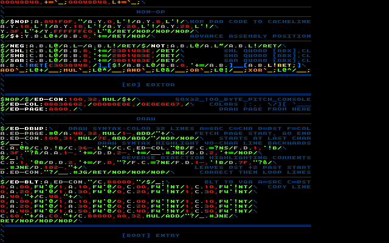

20150809 - 1536-4 : Coloring
Night 4 on 1536.
Brought up most of the "x56-40" (x86-64 in hex) assembler now.
Also have majority of the forth-like words needed to assemble self-documenting constants {add,mul,neg,not,and,or,xor,...}.
(Lost Image When Minus Went Down)
Started on the editor.
Just enough of a quick prototype to render the text view in the editor (sans cursor for now).
All screens on this post are captured from the editor running in an x86-64 emulator.
Keeping the fixed 64 character lines makes everything very simple.
Syntax highlighting was carefully designed to only need one line of context.
Just a simple backward sweep to color, then a forward sweep to correct the color for comments (the \ marks rest of line as comment).
Adjusted the font, {_,-,=} all now extend out full font cell width so they can double as lines.
Adjusted the colors closer to what I like for syntax highlighting.
Still experimenting with how to comment and arrange source.

Have 16 characters to the right of the source window to use for real-time debug data.
Like viewing values of registers, memory, etc.
Thinking through details in the background.
Next step is to bring up the non-USB throw-away keyboard driver,
then get the editor functional.
Bugs
Still finding the no-errors, no-tools, know-everything path, easy to work with.
This time lost some time to an opcode assembly bug.
A full class of opcodes was broken, something never validated from last time, just forgot to make a RIP relative offset RIP relative for non-branch instructions.
Everything else working out of the box with no human errors.
When the mind can reason about the entire system,
and the edit/execute loop is near instant,
bugs normally are instant fix.
Quite satisfying to work this way.